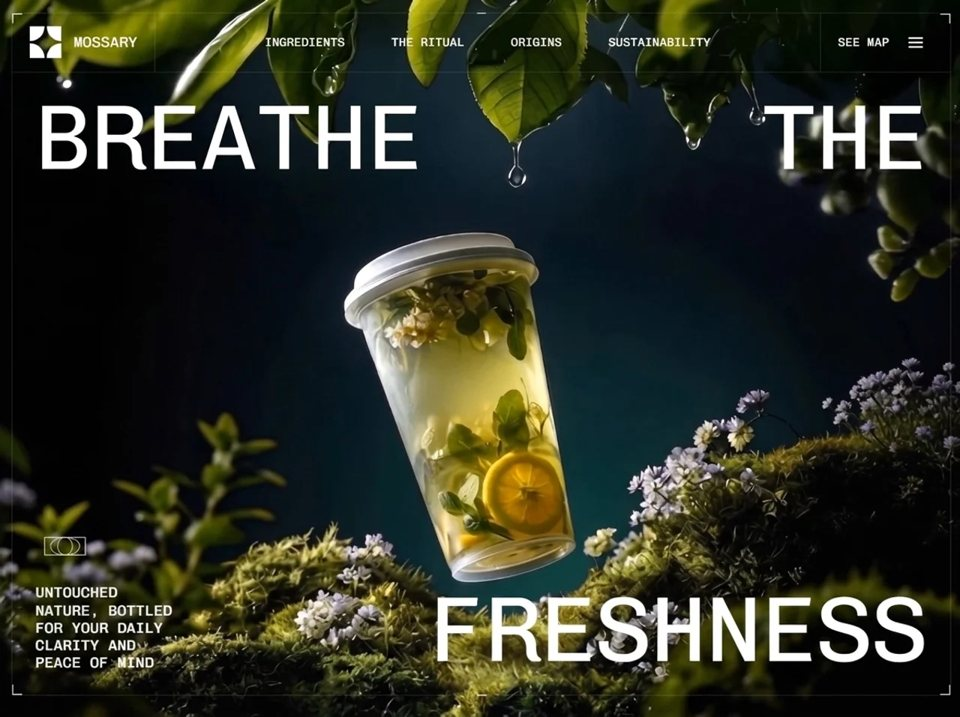

Nature Ritual
Wellnesswellnessyilai-ai 公开页面
收录时间：2026-08-20正文：22,620 字符

本地预览图 · jpeg
完整提示词
Build a **single full-screen hero section** for a brand called **Mossary** (nature/wellness water brand) as a **Vite + React 18 + TypeScript + Tailwind CSS 3** project. Output must be pixel-faithful to the spec below — **especially the spacing system in §5**. Do not add sections, do not add extra copy, do not substitute the asset URLs.
> ⚠️ **CRITICAL — READ BEFORE BUILDING**: This is NOT an edge-to-edge layout. There is a visible gutter between the browser viewport and a hairline-bordered frame, and a second layer of padding between that frame and the text inside it. Headline words (`BREATHE`, `THE`, `FRESHNESS`), the description paragraph, and the nav/logo must **never touch the viewport edge or the frame's inner edge**. If your output has text flush against the screen edge with no visible border box around the whole composition, it is wrong — go back to §5 and apply the exact pixel values.
## 0. Project scaffolding
- Vite + React + TypeScript, `"type": "module"`.
- Dependencies: `react@^18.3.1`, `react-dom@^18.3.1`. Dev: `tailwindcss@^3.4.1`, `postcss`, `autoprefixer`, `@vitejs/plugin-react`, `typescript`.
- `vite.config.ts` — React plugin, plus a path alias `@` → `./src`:
```ts
resolve: { alias: { '@': fileURLToPath(new URL('./src', import.meta.url)) } }
```
- File layout: `src/main.tsx` → `src/App.tsx` → `src/components/Hero.tsx`. `App.tsx` renders `<Hero />` and nothing else.
- `src/index.css`:
```css
@tailwind base;
@tailwind components;
@tailwind utilities;
* { margin: 0; padding: 0; box-sizing: border-box; }
html, body { overflow-x: hidden; }
```
## 1. Typography
- Font family: **Chivo Mono** (Google Fonts), weights `300;400;500;600;700`.
- Load in `index.html` `<head>` with preconnects:
```html
<link rel="preconnect" href="https://fonts.googleapis.com" />
<link rel="preconnect" href="https://fonts.gstatic.com" crossorigin />
<link href="https://fonts.googleapis.com/css2?family=Chivo+Mono:wght@300;400;500;600;700&display=swap" rel="stylesheet" />
```
- `tailwind.config.js` overrides the mono stack so `font-mono` resolves to Chivo Mono:
```js
theme: { extend: { fontFamily: { mono: ['"Chivo Mono"', 'monospace'] } } }
```
- Page `<title>`: `Mossary Hero Section`.
- The entire section carries `font-mono` — **every** piece of text on the page is Chivo Mono.
## 2. Color tokens (exact)
| Token | Value | Used for |
|---|---|---|
| Section background | `#010101` | behind the video |
| Label pill text | `#07141B` | text inside the white callout pills |
| White | `#FFFFFF` | all headline/nav text, brackets, SVG strokes, pill background |
| `white/10` | rgba(255,255,255,0.1) | frame border, nav dividers |
| `white/20` | | close-button ring |
| `white/40` | | mobile-menu link underline |
| `white/50` | | mobile-menu footer wordmark |
| `black/90` | | mobile-menu scrim (with `backdrop-blur-md`) |
## 3. Background video (exact URL — do not change)
```
https://d8j0ntlcm91z4.cloudfront.net/user_38xzZboKViGWJOttwIXH07lWA1P/hf_20260813_093202_0dff6f4a-4eb9-4252-8738-7214941c4b1a.mp4
```
Rendered as:
```jsx
<video
ref={videoRef}
className="absolute inset-0 h-full w-full object-cover"
src="https://d8j0ntlcm91z4.cloudfront.net/user_38xzZboKViGWJOttwIXH07lWA1P/hf_20260813_093202_0dff6f4a-4eb9-4252-8738-7214941c4b1a.mp4"
autoPlay
loop
muted
playsInline
/>
```
`playsInline` + `muted` are required for iOS autoplay. No poster, no overlay tint, no `<source>` children.
## 4. Root structure
```
<section> relative h-[100dvh] w-full overflow-hidden bg-[#010101] font-mono
<video> absolute inset-0 h-full w-full object-cover
<div GUTTER> relative z-10 mx-auto flex h-full flex-col p-2 sm:p-3 md:p-4 lg:p-5 ← layer A padding, see §5
<div FRAME> relative flex flex-1 flex-col border border-white/10
4 corner brackets + 2 center ticks
<Nav /> (header + mobile menu)
<div CONTENT> relative flex flex-1 flex-col justify-between p-3 sm:p-4 md:p-6 lg:p-8 ← layer B padding, see §5
top row: "Breathe" (left) · "the" (right)
<Labels /> absolutely positioned, video-driven
bottom row: <BottomDescription /> (left) · "freshness" (right)
```
Use `h-[100dvh]` (dynamic viewport height), **not** `h-screen` — this is what keeps mobile browser chrome from clipping the frame.
## 5. SPACING BLUEPRINT ⭐ (exact pixel values — this is what generators usually get wrong)
There are **two nested padding layers**, plus a set of smaller internal paddings/gaps inside individual components. Nothing in this layout is flush against an edge. Use these exact numbers — don't approximate.
### Box-model diagram
```
┌─ viewport ──────────────────────────────────────────────────┐
│ ← Layer A: GUTTER (8/12/16/20px, see table) → │
│ ┌─ FRAME (1px solid white/10 border) ─────────────────────┐ │
│ │ ┌─ header row (border-b white/10) ──────────────────┐ │ │
│ │ │ [12-24px pad] LOGO+WORDMARK | NAV | SEEMAP+BURGER │ │ │
│ │ └─────────────────────────────────────────────────────┘ │ │
│ │ ← Layer B: CONTENT PAD (12/16/24/32px, see table) → │ │
│ │ BREATHE THE │ │
│ │ │ │
│ │ [atom] │ │
│ │ description text FRESHNESS │ │
│ └────────────────────────────────────────────────────────┘ │
└────────────────────────────────────────────────────────────┘
```
The gutter (Layer A) is the space between the actual browser edge and the visible hairline frame. The content padding (Layer B) is a **separate, second** inset between the frame's border and the headline text / description / labels. Both exist at the same time — they stack, they do not replace each other.
### Table 1 — Layer A: outer gutter (`p-2 sm:p-3 md:p-4 lg:p-5`, all 4 sides)
| Breakpoint | Width | Gutter (all sides) |
|---|---|---|
| base (mobile) | < 640px | **8px** |
| `sm` | ≥ 640px | **12px** |
| `md` | ≥ 768px | **16px** |
| `lg` | ≥ 1024px | **20px** (also applies at `xl`, no further increase) |
### Table 2 — Layer B: content padding inside the frame (`p-3 sm:p-4 md:p-6 lg:p-8`, all 4 sides)
This is what pushes `BREATHE` / `THE` / `FRESHNESS` / the description block / the labels wrapper away from the frame's inner border.
| Breakpoint | Width | Content padding (all sides) |
|---|---|---|
| base | < 640px | **12px** |
| `sm` | ≥ 640px | **16px** |
| `md` | ≥ 768px | **24px** |
| `lg` | ≥ 1024px | **32px** (also applies at `xl`) |
### Table 3 — Header cell padding (left logo cell & right seemap/burger cell, `px-3 py-3 sm:px-5 sm:py-4 md:px-6`)
| Breakpoint | Horizontal padding | Vertical padding |
|---|---|---|
| base | 12px | 12px |
| `sm` | 20px | 16px |
| `md`+ | 24px | 16px (unchanged from `sm`) |
- Gap between logo icon and "mossary" wordmark: **8px** base → **16px** at `sm`+ (`gap-2` → `sm:gap-4`).
- Gap between "See map" link and hamburger button: **12px** constant at all breakpoints (`gap-3`).
- Center nav container horizontal padding: **24px constant** (`px-6`, no breakpoint change).
- Gap between the 4 center nav links: **32px** at `lg` (`gap-8`), **64px** at `xl` (`gap-16`).
- Header bottom border: 1px `white/10`, full width, separating header from content.
- Left cell has `border-r white/10`; right cell has `border-l white/10` — both dividers run the full header height.
### Table 4 — Callout label pill internal spacing
| Element | base | `sm`+ |
|---|---|---|
| Outer wrapper padding (space around the mini corner-bracket frame) | 8px | 12px |
| Pill text horizontal padding | 8px | 12px |
| Pill text vertical padding | 4px | 6px |
### Table 5 — Description block spacing
| Element | base | `sm`+ |
|---|---|---|
| Gap between atom icon and paragraph (margin-top) | 8px | 12px |
| Block max-width | 140px | 196px |
### Table 6 — Mobile menu spacing
| Element | Value |
|---|---|
| Each link's padding | 24px horizontal, 16px vertical (constant, all breakpoints) |
| Vertical gap between stacked links | 4px (`gap-1`) |
| Close button inset from top/right corner | 16px base → 24px at `sm`+ |
| Close button size | 48px × 48px (`h-12 w-12`) |
| Gap between menu footer logo and wordmark | 12px (`gap-3`) |
| Margin above menu footer (from last link) | 32px (`mt-8`) |
### Rule of thumb if you're implementing without exact breakpoint control
If your tool can't express 4 responsive steps, use the **`md` value as your single fixed default** (16px gutter, 24px content padding, 24px header cell padding) — that reads correctly on both a laptop and a phone, whereas using `0px` (edge-to-edge) or using only the mobile 8px/12px values on desktop will look cramped and wrong.
## 6. Frame decorations (inside the `border border-white/10` box)
Four L-shaped corner brackets, each a `<span>`, `border-2`, white, `10px` square scaling to `14px` at `sm`:
```jsx
<span className="absolute left-0 top-0 h-[10px] w-[10px] border-l-2 border-t-2 border-white sm:h-[14px] sm:w-[14px]" />
<span className="absolute right-0 top-0 h-[10px] w-[10px] border-r-2 border-t-2 border-white sm:h-[14px] sm:w-[14px]" />
<span className="absolute bottom-0 left-0 h-[10px] w-[10px] border-b-2 border-l-2 border-white sm:h-[14px] sm:w-[14px]" />
<span className="absolute bottom-0 right-0 h-[10px] w-[10px] border-b-2 border-r-2 border-white sm:h-[14px] sm:w-[14px]" />
```
These sit at the corners of the **FRAME**, not the viewport — i.e. inset from the browser edge by the Layer A gutter (Table 1).
Two 12px horizontal tick marks straddling the top and bottom edges, centered:
```jsx
<span className="absolute -top-[1px] left-1/2 h-px w-[12px] -translate-x-1/2 bg-white" />
<span className="absolute -bottom-[1px] left-1/2 h-px w-[12px] -translate-x-1/2 bg-white" />
```
## 7. Header / nav
```jsx
<header className="flex w-full items-stretch border-b border-white/10">
```
**Left cell** — `flex items-center gap-2 border-r border-white/10 px-3 py-3 sm:gap-4 sm:px-5 sm:py-4 md:px-6` (see Table 3 for exact px)
- Logo icon (see §11), sized `h-8 w-8 sm:h-10 sm:w-10 md:h-11 md:w-11`
- Wordmark: the literal string `mossary` (lowercase in source, rendered uppercase by CSS) — `text-sm uppercase tracking-wide text-white sm:text-lg md:text-xl`
**Center nav** — `hidden flex-1 items-center justify-center gap-8 px-6 lg:flex xl:gap-16`
- Links, in order: `Ingredients`, `The Ritual`, `Origins`, `Sustainability`
- Each: `href="#"`, `text-sm uppercase tracking-wide text-white transition-opacity hover:opacity-70 xl:text-base`
- **Hidden below `lg`** — desktop only.
**Right cell** — `ml-auto flex items-center gap-3 border-l border-white/10 px-3 py-3 sm:px-5 sm:py-4 md:px-6` (see Table 3 for exact px)
- `See map` link: `hidden ... md:block`, same styling as nav links (`text-sm uppercase tracking-wide text-white transition-opacity hover:opacity-70 xl:text-base`)
- Hamburger button (always visible, all breakpoints)
## 8. Hamburger button + animation
Button: `relative flex h-[44px] w-[44px] flex-col items-center justify-center sm:h-[48px] sm:w-[48px]`, `aria-label` toggles between `Open menu` / `Close menu`.
Three absolutely-positioned bars, each `h-[1.5px] w-5 bg-white`, all sharing
`transition-all duration-300 ease-[cubic-bezier(0.76,0,0.24,1)]`:
| Bar | Closed | Open |
|---|---|---|
| top | `-translate-y-[6px] rotate-0` | `translate-y-0 rotate-45` |
| middle | `scale-x-100 opacity-100` | `scale-x-0 opacity-0` |
| bottom | `translate-y-[6px] rotate-0` | `translate-y-0 -rotate-45` |
Result: the classic burger → X morph, all three bars animating simultaneously over 300ms.
## 9. Mobile menu overlay
Container: `absolute inset-0 z-50 flex flex-col transition-all duration-500 ease-[cubic-bezier(0.76,0,0.24,1)]`, toggling `pointer-events-auto` / `pointer-events-none`. It is **always mounted** — visibility is driven purely by opacity/transform so the transitions play in both directions.
**Scrim**: `absolute inset-0 bg-black/90 backdrop-blur-md transition-opacity duration-500 ease-[cubic-bezier(0.76,0,0.24,1)]`, `opacity-100` when open else `opacity-0`. Clicking it closes the menu.
**Close button**: `absolute right-4 top-4 z-20 flex h-12 w-12 items-center justify-center rounded-full border border-white/20 transition-all duration-400 ease-[cubic-bezier(0.76,0,0.24,1)] hover:border-white/50 hover:bg-white/10 sm:right-6 sm:top-6`. Open → `scale-100 opacity-100`; closed → `scale-75 opacity-0`. Inline style `transitionDelay: open ? '150ms' : '0ms'`.
Icon: 18×18 SVG, `<path d="M1 1L17 17M17 1L1 17" stroke="currentColor" strokeWidth="1.5" strokeLinecap="round" />`, `className="text-white"`.
**Link stack**: `relative z-10 flex h-full flex-col items-center justify-center gap-1 transition-all duration-500 ease-[cubic-bezier(0.76,0,0.24,1)]`; open → `translate-y-0 opacity-100`, closed → `-translate-y-6 opacity-0`. (Gap between links: 4px, see Table 6.)
Links, in order: `Ingredients`, `The Ritual`, `Origins`, `Sustainability`, `See map` (note: **See map is included here**, unlike the desktop nav).
Each link: `group relative px-6 py-4 text-2xl uppercase tracking-widest text-white transition-all duration-300 sm:text-3xl` (24px/16px padding — Table 6), with **staggered** inline styles:
```js
transitionDelay: open ? `${100 + i * 60}ms` : '0ms',
opacity: open ? 1 : 0,
transform: open ? 'translateY(0)' : 'translateY(12px)',
```
So delays are 100 / 160 / 220 / 280 / 340 ms.
Inner text span: `relative z-10 transition-opacity duration-200 group-hover:opacity-60`.
Hover underline: `absolute bottom-3 left-6 right-6 h-px origin-left scale-x-0 bg-white/40 transition-transform duration-300 group-hover:scale-x-100` — wipes in left-to-right.
Clicking any link closes the menu.
**Menu footer**: `mt-8 flex items-center gap-3 transition-all duration-500` (32px margin-top, 12px gap — Table 6), delay `${100 + 5 * 60}ms` = 400ms, same opacity/translateY pattern. Contains the logo icon at `h-6 w-6` and the wordmark `mossary` at `text-xs uppercase tracking-widest text-white/50`.
**Scroll lock**: a `useEffect` sets `document.body.style.overflow = 'hidden'` while open, restores `''` on close and on unmount.
## 10. Headline typography
Three headline words, each its own `<span>`, all sharing exactly:
```
text-[clamp(2rem,9.5vw,9.5rem)] font-normal uppercase leading-[0.9] text-white
```
Layout:
- **Top row** — `flex w-full items-start justify-between`: `Breathe` on the left, `the` on the right.
- **Bottom row** — `flex w-full items-end justify-between`: the description block on the left, `freshness` on the right.
Both rows live directly inside the CONTENT div (§4), so they automatically inherit the Layer B content padding (Table 2) — do **not** add any extra margin on the headline spans themselves.
The `clamp(2rem, 9.5vw, 9.5rem)` is the whole responsive type system for the headline — it fluidly scales from 32px on small phones up to 152px on large desktops with **no breakpoint classes**. `leading-[0.9]` gives the tight editorial stacking.
## 11. Logo mark
Inline SVG, `viewBox="0 0 256 256"`, single white path — a four-quadrant shape with concave quarter-circle corners:
```jsx
<svg viewBox="0 0 256 256" fill="none" className={className}>
<path
d="M 4.688 136 C 68.373 136 120 187.627 120 251.312 C 120 252.883 119.967 254.445 119.905 256 L 0 256 L 0 136.096 C 1.555 136.034 3.117 136 4.688 136 Z M 251.312 136 C 252.883 136 254.445 136.034 256 136.096 L 256 256 L 136.095 256 C 136.032 254.438 136.001 252.875 136 251.312 C 136 187.627 187.627 136 251.312 136 Z M 119.905 0 C 119.967 1.555 120 3.117 120 4.688 C 120 68.373 68.373 120 4.687 120 C 3.117 120 1.555 119.967 0 119.905 L 0 0 Z M 256 119.905 C 254.445 119.967 252.883 120 251.312 120 C 187.627 120 136 68.373 136 4.687 C 136 3.117 136.033 1.555 136.095 0 L 256 0 Z"
fill="white"
/>
</svg>
```
Accepts a `className` prop for sizing.
## 12. Video-driven callout labels ⭐ (the signature interaction)
A `useEffect` attaches a `timeupdate` listener to the video ref:
```ts
const handleTimeUpdate = () => {
if (!video.duration) return;
const progress = video.currentTime / video.duration;
setShowLabels(progress >= 0.75);
};
```
So the two callout labels **fade in once playback passes 75% of the clip's duration**, and fade back out when the loop restarts. Guard against `duration` being `0`/`NaN` before the metadata loads. Clean up the listener on unmount.
Labels wrapper: `pointer-events-none absolute inset-0 p-3 transition-opacity duration-700 ease-in-out sm:p-4 md:p-6 lg:p-8` (same values as Table 2 — it overlays the CONTENT div exactly), `opacity-100` when visible else `opacity-0`.
Two labels, absolutely positioned in percentages:
| Label | Position | Leader line |
|---|---|---|
| `Cold-Extracted` | `right-[12%] top-[32%] sm:right-[22%] sm:top-[35%] md:right-[25%] lg:right-[28%]` | `bottom-left` |
| `Hand-Foraged` | `bottom-[32%] left-[5%] sm:bottom-[35%] sm:left-[12%] md:left-[16%] lg:left-[18%]` | `top-right` |
### DashedLabel component
Wrapper `pointer-events-auto relative`; inner `relative p-2 sm:p-3` (see Table 4) carrying its own miniature bracket set:
- Four corner brackets: `h-[8px] w-[8px]` with single-width borders (`border-l border-t`, etc.), `sm:h-[10px] sm:w-[10px]`.
- Two center ticks: `-top-[4px]` / `-bottom-[4px]`, `left-1/2 h-px w-[8px] -translate-x-1/2 bg-white`.
The pill itself:
```jsx
<span className="whitespace-nowrap bg-white px-2 py-1 text-[11px] font-normal uppercase text-[#07141B] sm:px-3 sm:py-1.5 sm:text-sm md:text-base lg:text-xl">
```
White background, near-black `#07141B` text — inverted against the rest of the UI. (Padding values in Table 4.)
**Leader lines** — both `width="120" height="60" viewBox="0 0 120 60"`, `stroke="white" strokeWidth="1" fill="none"`, sized `h-8 w-16` on mobile and `sm:h-auto sm:w-auto` at ≥640px:
- `bottom-left`: `<path d="M100 0 L100 20 L20 50" />`, class `mt-1 h-8 w-16 sm:h-auto sm:w-auto` — drops from the pill then angles down-left.
- `top-right`: `<path d="M20 60 L20 40 L100 10" />`, class `absolute -top-[40px] left-[40%] h-8 w-16 sm:-top-[60px] sm:h-auto sm:w-auto` — rises from above the pill and angles up-right.
Both are two-segment elbow polylines (vertical stub, then a diagonal), giving the technical-diagram / annotation feel.
## 13. Bottom-left description block
Container: `max-w-[140px] sm:max-w-[196px]` (Table 5).
**Decorative "atom" SVG** — `viewBox="0 0 100 100"`, all strokes white `strokeWidth="1"`, `fill="none"`, sized `h-10 w-10 sm:h-12 sm:w-12 md:h-16 md:w-16 lg:h-20 lg:w-20`:
```jsx
<rect x="15" y="35" width="70" height="30" stroke="white" strokeWidth="1" fill="none" />
<ellipse cx="50" cy="50" rx="25.2" ry="15" stroke="white" strokeWidth="1" fill="none" />
<ellipse cx="50" cy="50" rx="12.6" ry="15" stroke="white" strokeWidth="1" fill="none" />
```
A wide rectangle with two concentric nested ellipses — reads like an orbital/atomic diagram.
**Paragraph**, exact copy:
> Untouched nature, bottled for your daily clarity and peace of mind
Classes: `mt-2 text-[10px] uppercase leading-[1.3] tracking-wide text-white sm:mt-3 sm:text-xs md:text-sm lg:text-base xl:text-xl xl:leading-[1.2]` (margin-top values in Table 5).
## 14. Responsive behavior summary
Tailwind default breakpoints (`sm:640 md:768 lg:1024 xl:1280`).
- **Outer gutter** (Layer A) ramps `8px → 12px → 16px → 20px`; **inner content padding** (Layer B) ramps `12px → 16px → 24px → 32px`. These are two separate, simultaneous insets — see §5.
- **Corner brackets** 10px → 14px at `sm`; label brackets 8px → 10px at `sm`.
- **Headline** never uses breakpoints — pure `clamp(2rem, 9.5vw, 9.5rem)`.
- **Desktop nav links** appear only at `lg+`; **"See map"** appears only at `md+`; the **hamburger is always visible** at every width.
- **Label positions** shift inward as the viewport grows (right 12%→28%, left 5%→18%) so the callouts track the subject in the video.
- **Leader-line SVGs** are clamped to `h-8 w-16` below `sm`, then render at natural size.
- **Mobile menu** links are `text-2xl` → `sm:text-3xl`; close button offset `top/right-4` → `sm:6`.
- **Description paragraph** scales across five steps: `10px → 12px → 14px → 16px → 20px`.
## 15. Motion inventory
| Element | Property | Duration | Easing | Delay |
|---|---|---|---|---|
| Hamburger bars | transform, opacity | 300ms | `cubic-bezier(0.76,0,0.24,1)` | — |
| Menu scrim | opacity | 500ms | `cubic-bezier(0.76,0,0.24,1)` | — |
| Menu link stack | transform, opacity | 500ms | `cubic-bezier(0.76,0,0.24,1)` | — |
| Menu links (each) | opacity, translateY | 300ms | default | `100 + i*60` ms |
| Menu footer | opacity, translateY | 500ms | default | 400ms |
| Close button | scale, opacity | 400ms | `cubic-bezier(0.76,0,0.24,1)` | 150ms |
| Link underline | scaleX (origin-left) | 300ms | default | — |
| Nav/link hover | opacity → 0.7 | default | default | — |
| Callout labels | opacity | 700ms | `ease-in-out` | — |
`cubic-bezier(0.76,0,0.24,1)` (easeInOutQuart) is the house easing curve — use it for every menu/hamburger transition.
## 16. Acceptance checks
1. Full-bleed CloudFront video autoplays, loops, muted, inline on iOS Safari.
2. Thin `white/10` frame **visibly inset from the viewport edge** (8-20px gutter per §5 Table 1), with four white corner brackets and two centered edge ticks sitting on that frame's corners — not on the browser's corners.
3. Headline text and the description block sit **inside a second padding layer** (12-32px per §5 Table 2) — there is visible breathing room between the frame's border and any text. Nothing touches the frame edge.
4. `BREATHE` / `THE` on the top row, `FRESHNESS` bottom-right, all Chivo Mono uppercase at `clamp(2rem,9.5vw,9.5rem)` with `0.9` line-height.
5. Both callout pills are invisible for the first 75% of the video and fade in over 700ms after that, resetting each loop.
6. Hamburger morphs to an X; overlay scrim blurs the video; links stagger in 60ms apart; body scroll is locked while open.
7. No horizontal scrollbar at any width from 320px to 2560px.把上面的提示词完整复制到支持长文本的 AI 工具中，再按需要替换品牌名、配色与文案。提示词描述的是整页结构与动效节奏，生成后建议在真实浏览器里检查首屏加载和移动端表现。
来源与版权
该条目来自公开提示词页面，原始出处信息未随页面提供。
提示词文本与预览素材的版权归原作者或原平台所有，本站仅作索引与归档。若你是权利人并希望移除本条内容，请通过联系方式告知。